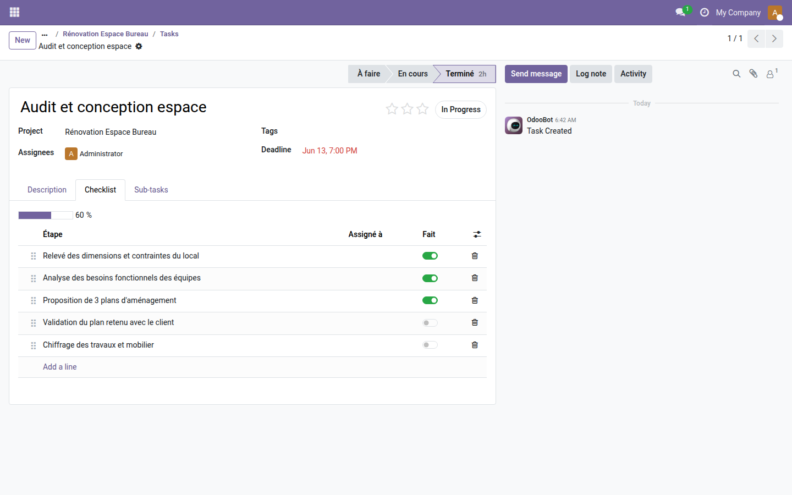
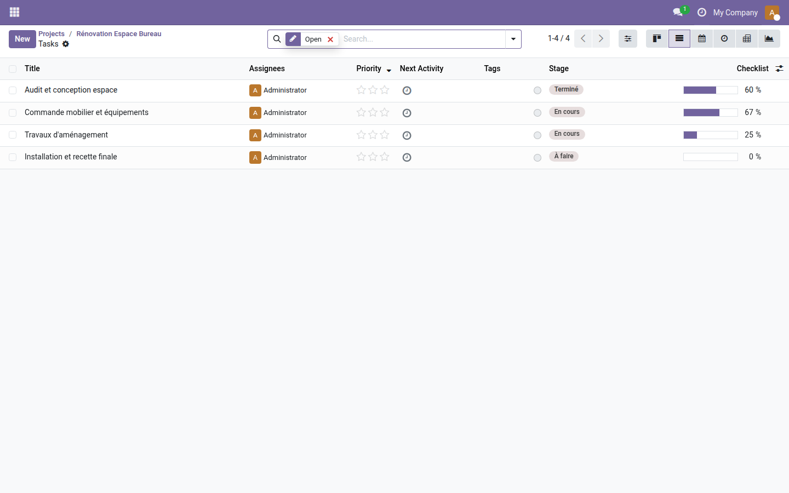

Step Checklist on Project Tasks
Break each task down into checkable sub-steps, track progress in real time and never let anything slip again.
A project task rarely holds a single action: draft, review, notify, deliver… Yet the task stays "In Progress" until someone marks it done. Odoo Community has no native way to list these micro-steps and see what is done, what is left, and who is handling it. The result: follow-ups go through messaging, things get forgotten, and the real progress stays invisible until the last minute.
What it adds
- ✅ Dedicated Checklist tab — every task gets an inline-editable list of steps that can be reordered by drag and drop, with no prior setup.
- 📊 Automatic progress bar — the percentage of checked steps is computed and displayed in real time, with no manual input.
- 👤 Per-step assignment — each sub-step can be assigned to a different user, recognizable at a glance by their avatar.
- 🔁 Progress column in the task list — see the completion rate straight from the list view, without opening each task.
In screenshots
1. Checklist tab on the task form
The progress bar and the list of steps appear in a dedicated tab — each line can be checked, reordered and assigned without leaving the task.

2. Progress column in the task list
The optional "Checklist" column shows the progress bar right in the list view — ideal for steering a sprint or a batch of tasks at a single glance.

Why install it
- Works right after installation — no configuration required, no paid dependency.
- Replaces checklists kept in emails or in task comments, the main sources of oversights.
- Automatically computed progress gives an objective view of the task's real status, useful for follow-up meetings or project reporting.
- The progress column is optional in the list view — it can be added without disrupting teams that do not use checklists yet.
- Free and open source (LGPL-3) — no limit on the number of users or projects.
License LGPL-3 — compatible with Odoo 18.0. Free, no subscription. Support: apps@odooskills.com.